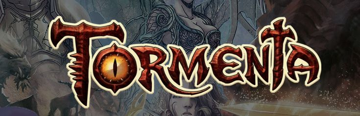
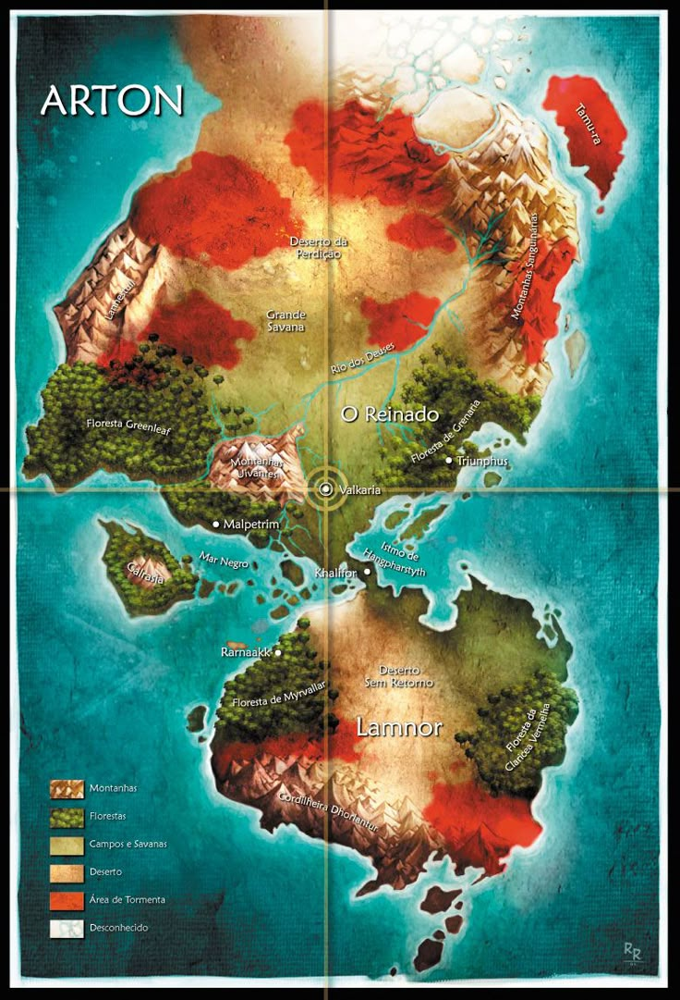

Tormenta (RPG)
Tormenta é um universo de fantasia que abrange romances, histórias em quadrinhos, jogos de RPG e outros produtos. Foi criado em 1999 por Marcelo Cassaro, Rogério Saladino e JM Trevisan, como um encarte especial comemorativo de 50 edições da revista Dragão Brasil. Em 2005, os títulos de Tormenta passaram a ser publicado pela Jambô Editora.
Os autores originais eram conhecidos como Trio Tormenta. Depois de alguns anos do cenário sendo publicado pela Jambô, novos autores passaram a integrar o time principal de desenvolvedores. Atualmente, eles são conhecidos como Quinteto Tormenta, em um grupo que é composto por dois dos autores originais, além de Guilherme Dei Svaldi, Leonel Caldela e Rafael Dei Svaldi.
Em 2019, Tormenta comemorou seus 20 anos com uma campanha de financiamento coletivo para a realização de uma nova edição de seu RPG com participação do público. A campanha foi a maior do Brasil em todas as categorias, quebrando todos os recordes de arrecadação.

História
Em 1998, Marcelo Cassaro publicou Holy Avenger, uma aventura para AD&D e GURPS Fantasy em 3 partes nas edições 44 a 46 da revista Dragão Brasil. Segundo Trevisan e Saladino, editores assistentes da Dragão Brasil, na iminência da edição de número 50 da revista, uma reunião editorial foi feita no apartamento do editor-chefe Marcelo Cassaro, tendo em vista um projeto para a comemoração do número 50 da publicação, algo único em uma revista nacional do gênero.
Na edição comemorativa das 50 edições, um encarte especial com 80 páginas explicava o cenário de Tormenta, reunindo personagens, locais, itens, deuses e outras criações avulsas de matérias publicadas na revista em um único cenário coeso. A edição especial abrangia os principais sistemas para RPGs de fantasia medieval vigentes (GURPS, AD&D e 3D&T, um sistema próprio criado na revista). Rapidamente, as unidades esgotaram das bancas, sendo que a procura foi tão grande que foram reportados casos em que bancas de revista vendiam o encarte extra separadamente. Logo em seguida, foi publicada uma nova edição apenas para 3D&T, a fim de evitar problemas com direitos autorais.
A aventura Holy Avenger foi adaptada para uma história em quadrinhos no estilo mangá, com roteiros de Marcelo Cassaro e arte de Érica Awano.
O inesperado sucesso de Tormenta se refletiu nas edições seguintes da revista. Mais matérias eram feitas especificamente para o cenário. Embora diversos leitores reclamassem pelo excesso de matérias sobre o mesmo, maior era a quantidade de pessoas pedindo mais informações. Em poucos meses, diversos novos conteúdos surgiram.
Nos anos seguintes, a quantidade de novos materiais, inclusive alguns criados por fãs, pediu novas edições e revisões. Houve inclusive mudanças nos sistemas usados. Em 2001 foi lançada Tormenta Terceira Edição, uma adaptação para Daemon, um outro sistema brasileiro. No mesmo ano, chegou ao mercado brasileiro a terceira edição de Dungeons and Dragons pela Devir Livraria e com ela a Open Game License (OGL), que permite a outras editoras usar um sistema inspirado em D&D, o chamado Sistema d20. Em 2003, foi lançado o Tormenta D20, adaptando o cenário para d20. No mesmo ano foi lançada uma adaptação de Tormenta baseada no Manual Turbinado de 3D&T.
Com o passar do tempo, o cenário começou a fazer tanto sucesso que nem todas as informações apresentadas na revista Dragão Brasil conseguiam cobrir a vontade dos jogadores. O Trio Tormenta decidiu então criar uma revista separada, chamada Revista Tormenta, reunindo conteúdo exclusivo para o cenário. A revista teve uma boa recepção e dezessete edições lançadas até ser descontinuada, após o fim da relação de trabalho entre o Trio Tormenta e a Editora Talismã.
Em 2005, após a saída da Talismã, os membros do Trio passaram a trabalhar com outras editoras, lançando a revista RPGMaster (dedicada a 3D&T) para a Mythos Editora e a Revista Dragon Slayer para Mantícora, que seguia o estilo da antiga Dragão Brasil, adotando um padrão de lançamento bimensal e inicialmente com conteúdo voltado principalmente para o Sistema d20 e Open Game License. No mesmo ano, é lançado um novo manual pela Daemon e uma nova versão de Tormenta D20 pela Jambô Editora, baseado em D&D 3.5, publicado pela Devir no ano anterior.
Em 2008, 3D&T volta a ser publicado pela Jambô, com o nome de 3D&T Alpha. No mesmo ano, a partir da edição #24 da revista Dragon Slayer, Cassaro, Saladino e Trevisan deixaram de ser editores da revista. Em seus lugares entraram Guilherme Dei Svaldi, Gustavo Brauner, Leonel Caldela, que ficaram conhecidos como Trio Tormenta Ultimate.
Em 2010, é lançado pela Jambô Editora o "Tormenta RPG", escrito pelos dois trios. O sistema de jogo se baseia na OGL, mas trazendo muitos elementos próprios. No mesmo ano, Tormenta volta a ser adaptado para 3D&T com o lançamento do Manual do Aventureiro Alpha, que traz vários elementos do cenário. Em 2013, é lançada uma versão revisada do Tormenta RPG, contendo uma errata do livro anterior e 16 novas páginas. Em 2016 é lançado Tormenta Alpha, que adapta o cenário exclusivamente para 3D&T. Sua última versão foi publicada em 2017, Tormenta RPG Edição Guilda do Macaco.
Em maio de 2019, em comemoração aos 20 anos do cenário, a Jambô lançou no site Catarse, uma campanha de financiamento coletivo de Tormenta 20, um novo sistema de RPG, também baseado em D20, porém com novas regras, raças, classes e com uma atualização completa do cenário nos últimos 20 anos. A campanha encerrou no dia 9 de julho de 2019, conseguindo um financiamento de R$ 1.918.486, o que representa 2.398% da meta original de R$ 80.000, se tornando a maior captação brasileira em plataformas de financiamento coletivo de recompensas da história.
Em maio de 2023, a Jambô realizou um novo financiamento coletivo no Catarse, dessa vez para a "Coleção Arton". O principal objetivo do financiamento foi a publicação de dois livros, Atlas de Arton e Ameaças de Arton. Sua arrecadação total foi de R$ 2.326.484, superando a primeira campanha. Em março de 2024, é lançada a campanha de financiamento coletivo recorrente da revista Tormenta20.
Locais
Estas são as principais localidades do mundo de Tormenta, publicado pela Jambô Editora.
Arton
É o continente principal, formado por duas faixas de terra maiores: Remnor (ou Arton-Norte) e Lamnor (ou Arton-Sul), unidas por um istmo. Muitas vezes, é usado como sinônimo de todo o mundo conhecido. A maior coalizão de reinos de Arton-Norte é o Reinado.

O Reinado
Há muitos anos, no continente de Arton-Sul, houve uma guerra, conhecida como a Grande Batalha. O povo que perdeu o conflito foi expulso e exilado ao norte desconhecido. Da migração forçada surgiu o Reinado, uma aliança entre nações reunidas sob o comando de um Imperador-Rei, com o propósito de prosperarem juntas. É fato que nem tudo foi paz — batalhas aconteceram e inimizades entre reinos nunca foram esquecidas. A união entre as nações sempre evitou o mal maior por quase quinhentos anos, mas as Guerras Táuricas e as Guerras Artonianas diminuíram consideravelmente o tamanho da coalizão.
Atualmente, o Reinado é composto pelos seguintes reinos:
Deheon, o reino capital. Primeiro reino humano fundado após a Grande Batalha e da migração forçada dos derrotados do sul. Seu maior símbolo é a gigantesca estátua de Valkaria, a Deusa dos Humanos e da da Ambição, que marca o ponto zero da civilização.
Ahlen, o reino da intriga. Um lugar em onde a lei do mais forte foi suplantada pela lei do mais esperto e mesmo esta só se aplica aos tolos o suficiente para se deixarem apanhar. Anexou a ilha de Collen depois da Guerra Artoniana.[31]
Bielefeld, o reino dos cavaleiros. Um lugar com forte tradição em histórias de cavalaria e em portentosos cavaleiros que praticam o heroísmo em nome de Khalmyr, o Deus da Justiça.
Namalkah, o reino indomado. Terra comprida, de planícies sem fim, Namalkah é o lar de cavaleiros formidáveis que, sem qualquer pompa, como a dos cavaleiros de Bielefeld, tratam os cavalos como irmãos.
Pondsmânia, o reino das fadas. Este temido reino é habitado quase unicamente por criaturas mágicas, especula-se que em meio as suas florestas o tempo e o espaço funcionam de forma diferente.
Wynlla, o reino da magia. Neste reino em que a magia faz parte do cotidiano, encontra-se a maior concentração do mundo de estudiosos e praticantes das artes arcanas.
Zakharov, o reino das armas. Nenhum outro lugar de Arton é tão ligado às armas quanto neste reino, em que elas fazem parte da cultura e são consideradas relíquias de família.
Além do Reinado
Existem vários outros lugares notáveis em Arton que não estão ligados às nações.
Aslothia, o reino dos mortos. Depois de décadas em preparação, Ferren Asloth realizou um ritual que consumiu as vidas de seus súditos para se tornar um arquilich. A nação vizinha de Hongari foi afetada e consumida no processo. Aslothia é habitada por todo tipo de morto-vivo.
Doherimm, a montanha de ferro. A maior nação em extensão de todo mundo se encontra muitos quilômetros abaixo da terra. É o reino dos anões, cujas entradas e formas de acesso são segredos exclusivos da raça. É governada por um conselho de guildas.
Ermos Púrpuras, a terra de ninguém. Os Ermos Púrpuras são o nome dado a uma perigosa região habitada por tribos bárbaras e flagelada pela corrupção da Tormenta.
Feudos de Trebuck, a terra dos mil barões. Anteriormente um bom lugar para se viver, Trebuck nunca mais foi a mesma depois da chegada da Tormenta, que vem avançando e consumindo a realidade. O governo se fragmentou quando sua rainha se voltou para Deheon, deixando a região sem governo central.
Floresta de Tollon. Anteriormente um reino de lenhadores, Tollon foi dominado pelos minotauros nas Guerras Táuricas. Quando o Império de Tauron se fragmentou, a região foi abandonada, se tornando um ermo sem lei. É o único lugar onde se encontra a madeira tollon, mais resistente do que qualquer outra.
Halak-Tûr, o deserto da perdição. Essa região perigosa do extremo norte de Arton é repleta de segredos místicos, tesouros mágicos e oásis refrescantes. É habitada por um povo endurecido e fatalista, os shamiris, que acreditam não existir destino exceto o destino que nos é dado. É uma diarquia regida pelo Sultão Fazûd e pelo Príncipe Tuarin.
Império de Tauron, a chama do oeste. Depois da morte do Deus da Força, Tauron, o império dos minotauros ruiu. Outrora o maior reino sob a superfície de Arton, hoje os minotauros lutam para manter em paz seu território, incluindo as províncias de Fortuna, Petrinya e Lomatubar, anexadas durante as Guerras Táuricas. É uma república triunviral governada pelos minotauros Kelskan (antigo sumo-sacerdote de Tauron) e Glabo Varaxus Tirvanius e pela sereia Pérola Aurelius Lomatubarius.
Khubar, o reino-arquipélago. Repelindo os colonizadores, os orgulhosos guerreiros de Khubar lutaram para preservar sua cultura e costumes até conquistarem o direito de serem reconhecidos como uma nação independente. Sob a proteção do Dragão-Rei Benthos, são um território neutro comum para negociações importantes.
Montanhas Sanguinárias. Todo o extremo leste de Arton é margeado por esta cordilheira montanhosa, que separa o continente do oceano. O lugar é um dos mais perigosos do mundo, habitado por toda sorte de monstros, dragões e criaturas fantásticas.
Montanhas Uivantes. No coração de Arton, próximo a Deheon, existe uma cadeia de montanhas que se tornou gelada pela simples presença de Beluhga, a Dragoa-Rainha do Frio. Habitado por povos bárbaros que nunca reconheceram qualquer forma de governo centralizado, as Montanhas Uivantes são consideradas parte do Reinado por pura conveniência geográfica.
Repúblicas Libres de Sambúrdia, a terra do ouro. Lugar de terras extremamente produtivas, onde plantações chegam a proporcionar cinco colheitas por anos, Sambúrdia cresceu em torno da lavoura e da força das pessoas simples. Depois da Guerra Artoniana, anexou os reinos de Callistia e Nova Ghondrian.
Ruínas de Tyrondir, a terra depois do fim. Localizada no extremo sul do Reinado, Tyrondir guardava as fronteiras com o continente de Lamnor e o povo do continente sul. Foi destruído com a queda de um meteoro e invadido pelos duyshidakk de Arton-Sul. É uma terra afligida pelo fenômeno do lodo negro e pela devastação meteórica.
Salistick, o reino sem deuses. Um reino onde a própria população perdeu a fé nas divindades (e onde, curiosamente, a magia divina não funciona como deveria). A quase inexistência de clérigos fez com que os nativos desenvolvessem a medicina a níveis inigualáveis em Arton.
Sckharshantallas, o reino do dragão. Desde que Sckhar, o Dragão-Rei do Fogo, fez desta região seu covil, há muitos séculos atrás, recebeu homenagens e devoção dos bárbaros que ali moravam. Algo semelhante ocorreu com os migrantes que vieram do sul.
Supremacia Purista, o exército com uma nação. Uma das mais influentes e poderosas nações de Arton, toda a cultura deste reino é baseada na guerra e no ódio racial. É o lar dos puristas, causadores da Guerra Artoniana, o maior conflito militar da história do Reinado.
Svalas, o reino renascido. Essa pequena e jovem nação tem raízes mais profundas do que aparenta, com uma história que remonta à Grande Batalha. Sua libertação foi o estopim da Guerra Artoniana e o reino permanece como um bastião de diversidade e tradição
Ubani, a grande savana. Ao norte do Império de Tauron, fica a região misteriosa conhecida como Grande Savana. É lar dos ubaneri, um povo místico que conheceu a paz e estabeleceu laços de comunidade com forças elementais depois do desaparecimento de sua principal divindade, Kallyadranoch, Deus dos Dragões e do Poder.
Além de Arton
Esses locais são importantes para o mundo de Tormenta, mas ficam fora do continente de Arton.
Galrasia, o inferno verde. Essa ilha é habitada por monstros gigantes e tem uma relação com Lena, a Deusa da Vida. Lá existe a cidade de Lysianassa, habitada pelas dahllan, meio-dríades.
Lamnor, o continente bestial. O continente de Arton-Sul, outrora rico e poderoso, foi devastado pela Grande Batalha que gerou a colonização do Reinado. Todos os reinos que restaram sobreviveram isolados, até o surgimento da Aliança Negra, o temível exército goblinoide liderado pelo bugbear Thwor Khoshkothruk. Após a queda de Lennórien, a antiga nação dos elfos, um a um, os reinos humanos foram também caíram, tornando todo o continente sul domínio das raças goblinoides. Com a queda de um meteoro profetizado, Thwor morreu e ascendeu à divindade, tornando Lamnor o lar por mérito de seu povo, os duyshidakk.
Moreania, reinos do povo-fera. Este arquipélago situado a leste do continente de Arton (cerca de um mês de viagem a navio) é lar do povo moreau, humanos com traços de animais e uma cultura dualista entre Allihanna, a Deusa da Natureza (conhecida como A Dama Altiva) e Megalokk, o Deus dos Monstros (conhecido como O Indomável).
Tamu-ra, o império de jade. A ilha de Tamu-ra se localiza no extremo nordeste de Arton, após as Montanhas Sanguinárias, e é lar de histórias baseadas no oriente fantástico, com samurais e ninjas. O primeiro lugar a ser devastado pela Tormenta, Tamu-ra foi também a primeira Área de Tormenta a ser derrotada, por um exército formado por deuses menores, liderados por sir Orion Drake. Em poucos anos, guiados por Lin-Wu, o Deus da Honra, os tamuranianos começaram um processo de reconstrução de seu antigo império.
Cenário Expandido
O cenário de Tormenta já existe há 20 anos, tendo muito material produzido. Algumas informações permaneciam em suas novas versões do jogo, outras eram atualizadas e algumas outras eram superadas conforme os acontecimentos dentro do cenário se desenvolviam em contos, romances, quadrinhos e aventuras oficiais, com seus diversos materiais produzidos espalhados por revistas, suplementos e módulos básicos.
Literatura
Tormenta possui oito romances e três coletâneas de contos situadas no cenário.
O primeiro romance, O Inimigo do Mundo, foi publicado em 2004 pelo autor Leonel Caldela. O livro se tornou o primeiro volume da Trilogia da Tormenta, que ganhou o segundo volume em 2007, intitulado O Crânio e o Corvo, e um terceiro volume em 2008, com o título O Terceiro Deus.
Em 2011, foi publicado o primeiro livro de coletânea de contos, Crônicas da Tormenta Vol. 1, organizado por JM Trevisan, com contos inéditos e clássicos situados no cenário, pelos autores Leonel Caldela, Marcelo Cassaro, Remo di Sconzi, Raphael Draccon, Douglas MCT, Leandro Radrak, Ana Cristina Rodrigues, Rogério Saladino, Antonio Augusto Shaftiel, Marlon Teske e Claudio Villa.
Em 2016, foi publicado Crônicas da Tormenta Vol. 2, organizado por JM Trevisan, com contos dos autores Ana Cristina Rodrigues, Bruno Schlatter, Davide Di Benedetto, Douglas "Mago D'Zilla" Reis, Guilherme Dei Svaldi, Igor André Pereira dos Santos, José Roberto Vieira, Karen Soarele, Leonel Caldela, Leonel Domingos, Lucas Borne, Marcelo Cassaro, Marlon Teske, Remo di Sconzi, Rogério Saladino e Vagner Abreu.
Em 2017, foi publicado o quarto romance situado no cenário, A Joia da Alma, pela autora Karen Soarele.
Em 2018, foi publicado o quinto romance situado no cenário, A Flecha de Fogo, pelo autor Leonel Caldela.
Em 2019, foi publicado o sexto romance situado no cenário, A Deusa no Labirinto, pela autora Karen Soarele.
Em 2021, foi publicado Crônicas da Tormenta Vol. 3, organizado por Vinicius Mendes, com contos de Ana Cristina Rodrigues, Bruno Schlatter, Carlos Alberto Xavier Gonçalves, Davide Di Benedetto, Emerson Xavier, Francine Cândido, Guilherme Dei Svaldi, JM Trevisan, J. V. Teixeira, João Victor Lessa, Karen Soarele, Leonel Caldela, Leonel Domingos, Lucas Borne, Marcela Alban, Marcelo Cassaro, Marlon Teske, Remo di Sconzi e Vinicius Mendes.
Em 2023, foi publicado o sétimo romance situado no cenário, A Cidade da Raposa, pelo autor Lucas Borne.
Em 2024, foi publicado o oitavo romance situado no cenário, Dado Selvagem, pela autora Kali de los Santos.
Quadrinhos
Tormenta possui diversas séries em quadrinhos situadas no cenário, com diversos autores e ilustradores. Holy Avenger e Holy Avenger: Paladina, com roteiro de Marcelo Cassaro e arte de Erica Awano; Dungeon Crawlers, com roteiro de Marcelo Cassaro e arte de Daniel HDR; 20 Deuses, com roteiro de Marcelo Cassaro e arte de Rafael Françoi; DBride: A Noiva do Dragão, de Marcelo Cassaro e arte de Erica Awano; Khalifor, com roteiro de JM Trevisan e Ricardo Mango; e Ledd, com roteiro de JM Trevisan e arte de Lobo Borges, Heitor Amatsu e Ricardo Mango.
Livros-jogos
Tormenta possui quatro livros-jogos: Ataque a Khalifor, de Guilherme Dei Svaldi; O Senhor das Sombras, de Athos Beuren; O Labirinto de Tapista, de Lucas Borne; e Deus da Guerra, de Marcelo Cassaro e Lucas Borne.
Videogames
Tormenta tem três jogos de videogame: O Desafio dos Deuses; jogo de ação em plataforma 3D, lançado em 2013, pelo Laboratório de Jogos Digitais da Universidade Feevale em parceria com a Jambô Editora, em uma campanha de financiamento coletivo. Holy Avenger, do estúdio indepenente Messier Games & Animations, lançado na Steam em formato incompleto. E Reverie Knights Tactics, um RPG tático adaptando o quadrinho Dungeon Crawlers, lançado para Nintendo Switch, PlayStation 4, Microsoft Windows, Linux, Xbox One e MacOS.
Iniciativa T20
Com a campanha de 20 anos a edição chamada de Tormenta20 abriu espaço para a Iniciativa T20, onde autores independentes podem publicar obras no cenário de Tormenta e esse conteúdo, após aprovação, vai para o catálogo da loja da Jambô Editora.